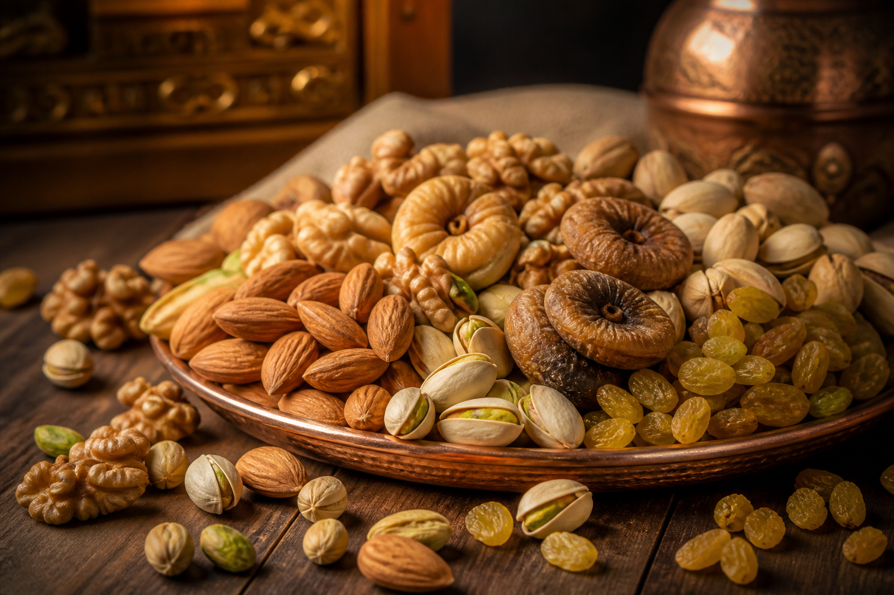
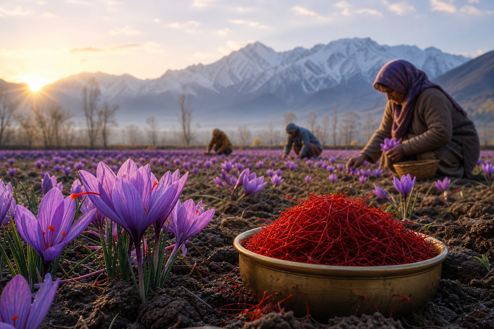
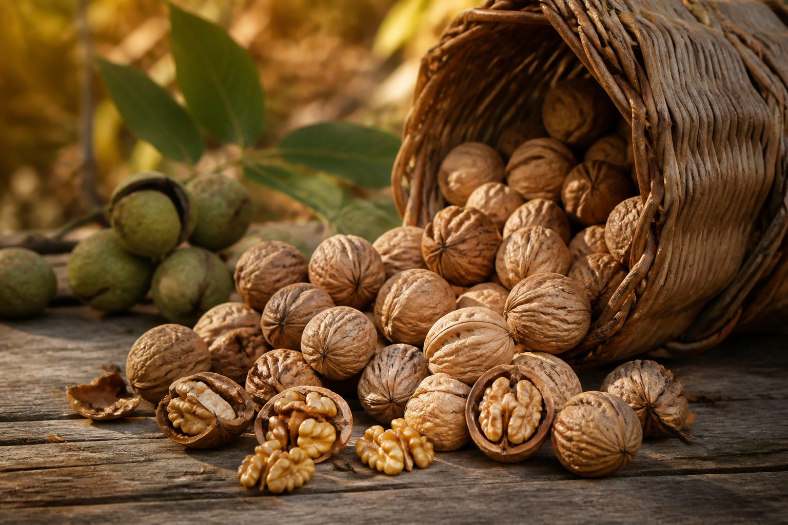
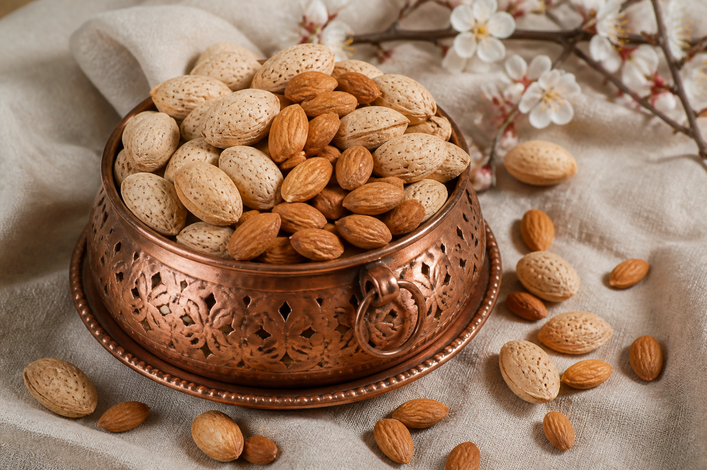
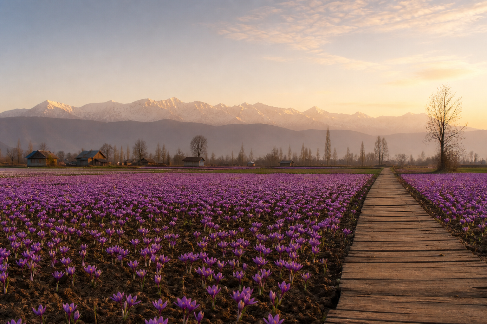

<section class="about-section">
  <div class="container">
    <div class="row align-items-center g-4">

      <!-- IMAGE SLIDER -->
      <div class="col-lg-6 order-lg-2">
        <div class="image-slider">
          <div class="slider-track">

            <!-- ORIGINAL -->
            
            
            
            
            

            <!-- DUPLICATE (IMPORTANT for infinite scroll) -->
            
            
            
            
            

          </div>
        </div>
      </div>

      <!-- CONTENT -->
      <div class="col-lg-6 order-lg-1">
        <div class="content">
          <span class="tag">About Duha Dryfruits</span>
          <h2>Duha Dryfruits</h2>

          <p class="about-text">
            Duha Dryfruits belongs to Kashmir&rsquo;s saffron land — rooted in
            <strong>Gundbal, Pampore</strong>, the heart of authentic Kashmiri saffron
            and farm produce. We grow and nurture from our own farms, so what reaches
            your home is genuine — not just sourced, but truly ours.
          </p>

          <p class="about-text">
            From premium dry fruits and saffron to carefully packed nuts and pantry
            essentials, every product reflects the purity of our land and the care of
            our hands. No shortcuts, no fillers — authentic Kashmiri goodness, sealed
            fresh and delivered with pride.
          </p>

          <div class="btn-box">
            <a routerLink="/contact" class="btn-style-one">Contact Us</a>
          </div>
        </div>
      </div>

    </div>

    <!-- FUTURE GOAL -->
    <div class="future">
      <span class="tag">Our Promise</span>
      <h3>From our farms to your home</h3>

      <p>
        Our vision is to share the authentic taste of Kashmir&rsquo;s saffron land with
        families across India and beyond — with honesty, farm-grown purity, and care
        in every pack.
      </p>
    </div>

  </div>
</section>
